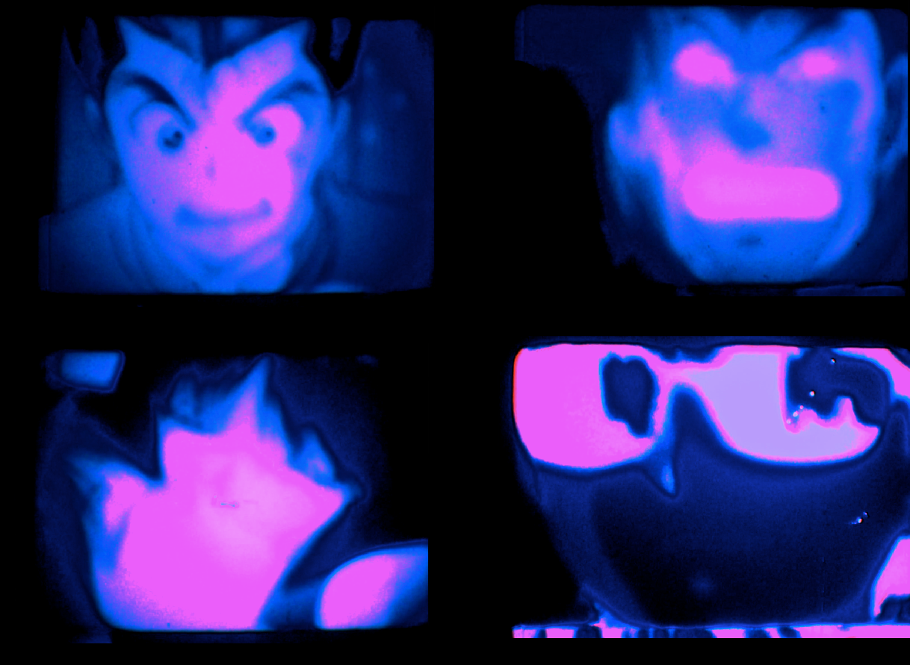

Love Triangle (Yu Yu Hakusho)
5:12 | 8mm film | 2017
Appropriating the very much heterosexual love triangle between high school anime greasers and their female love interest, I present a blurred and essentially unreadable version of their relationship with the possibility of expanded, bisexual love. This was an early 8mm experiment, filming a monitor with a super 8 camera.

Bathtub Boys
X:XX | 16mm film loops | 2017
A technical test - using digital printing on 16mm film to create digital images that can be projected using an analog projector. A collage of myself in a bathtub and an anime character in a bathtub. While the loops can run indefinitely, each projection scratches the ink further off the film.

nilson carroll